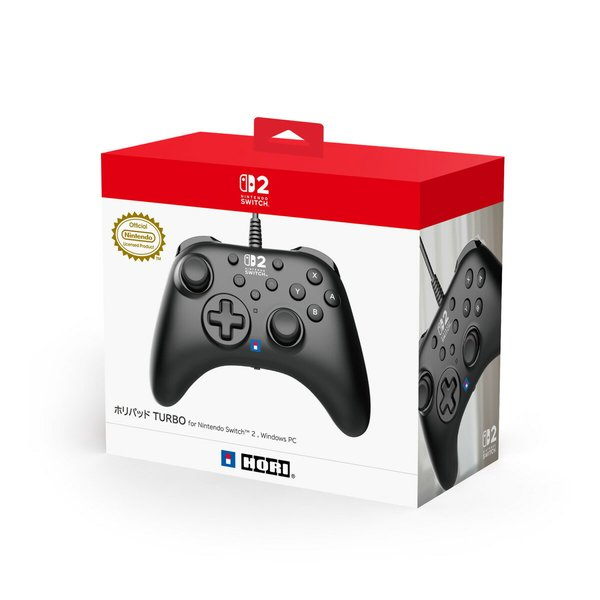
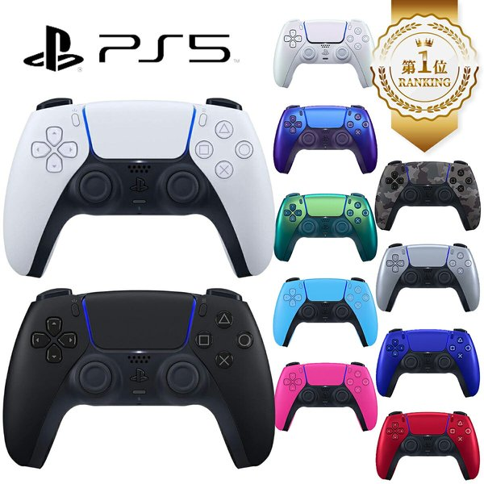
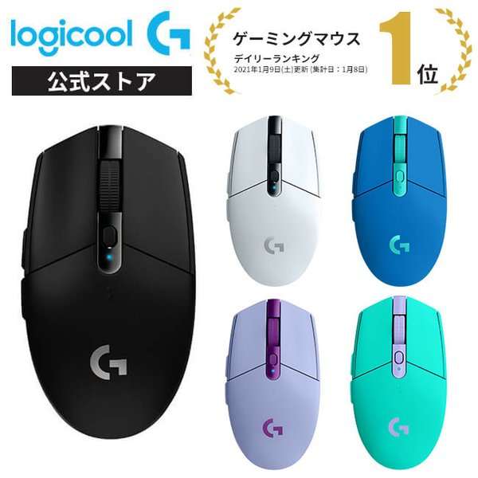
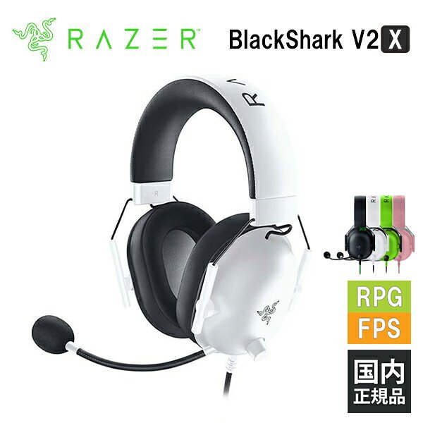
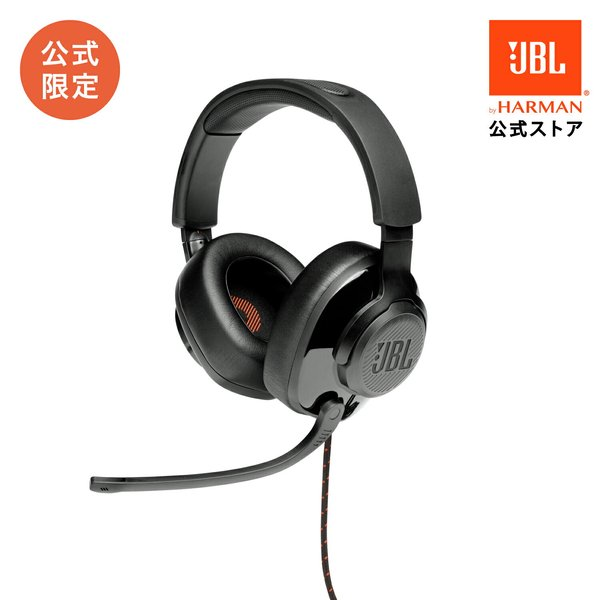
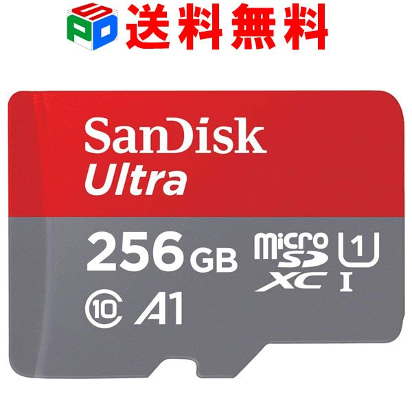
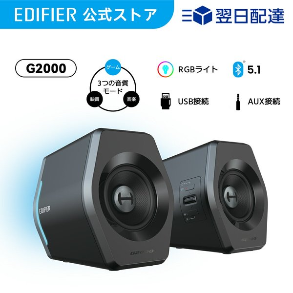
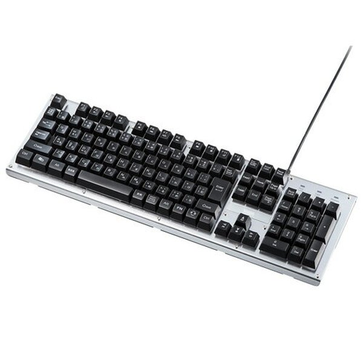
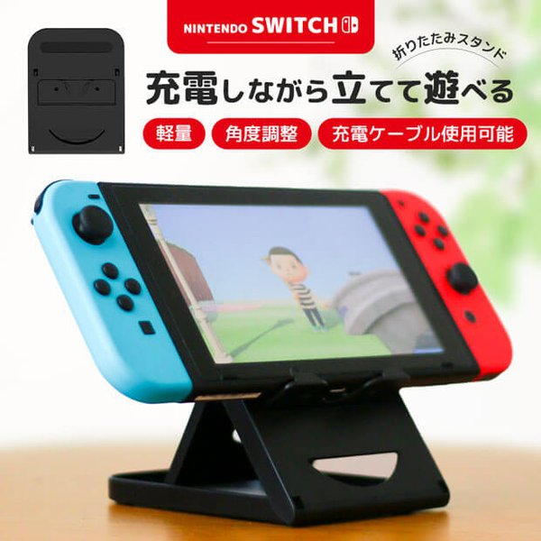

【2026年ブラックフライデー】年末年始のおうち時間を満喫！Nintendo Switch・PS5・PCゲーミング周辺機器＆コントローラー・ヘッドセット10選
年末年始は、家でゲームをする時間が一年でいちばん長くなる時期です。だからこそ、スティックがヘタったコントローラーや、音のこもるテレビスピーカーのまま正月を迎えるのはもったいない。ブラックフライデーは、周辺機器をまとめて入れ替えるのに向いています。
選ぶ軸は3つです。コントローラーは純正かサードパーティーか、ヘッドセットは有線か無線か、そしてストレージの容量。純正は本体の機能をすべて使えますが価格が高く、サードパーティーは連射や背面ボタンなど純正にない機能を安く足せます。ヘッドセットは、遅延を避けたいFPSなら有線、家事をしながら遊ぶなら無線が向いています。Switchのダウンロードソフトは1本で十数GBになるので、microSDは256GBを1枚入れておくと安心です。デスクで遊ぶ時間が長いなら、スピーカーとキーボードも一緒に見直すと、同じゲームでも臨場感が変わります。
本記事では、楽天市場で人気・高評価のSwitch・PS5・PCゲーミング周辺機器10選を、実売価格とレビュー評価つきで写真付き紹介します。
- おすすめ10選 スペック・特徴比較表
- BEST 1｜Nintendo Switch 2 Proコントローラー
- BEST 2｜ホリパッド TURBO for Nintendo Switch 2 NSX-005
- BEST 3｜DualSense ワイヤレスコントローラー
- BEST 4｜ゲーミングマウス G304（LIGHTSPEED・HEROセンサー）
- BEST 5｜BlackShark V2 X White ゲーミングヘッドセット
- BEST 6｜ゲーミングヘッドセット Quantum 200
- BEST 7｜microSDXCカード Ultra 256GB（A1・Class10・UHS-I）
- BEST 8｜G2000 ゲーミングスピーカー（最大32W・Bluetooth 5.1）
- BEST 9｜ゲーミングキーボード SKB-WAR3（有線・日本語配列）
- BEST 10｜Nintendo Switch 卓上スタンド（6段階角度調整）
- 【読者負担0円】買わなくても得する無料サービス
- まとめ：年末年始のゲーミング周辺機器10選の選び方
| 順位 | 商品名 | ブランド | 最大の特徴・おすすめ理由 | 総合評価 |
|---|---|---|---|---|
| BEST 1 | Nintendo Switch 2 Proコントローラー | 任天堂（Nintendo） | 純正なのでSwitch 2の機能をそのまま使える | 4.80 |
| BEST 2 | ホリパッド TURBO for Nintendo Switch 2 NSX-005 | HORI | 充電不要の有線タイプ | 4.38 |
| BEST 3 | DualSense ワイヤレスコントローラー | SONY（PlayStation） | アダプティブトリガーで手応えが変わる | 4.74 |
| BEST 4 | ゲーミングマウス G304（LIGHTSPEED・HEROセンサー） | Logicool G | 99gの軽量ボディ | 4.51 |
| BEST 5 | BlackShark V2 X White ゲーミングヘッドセット | Razer | 240gと軽く長時間でも疲れにくい | 4.50 |
| BEST 6 | ゲーミングヘッドセット Quantum 200 | JBL | JBLらしい低音で迫力がある | 4.51 |
| BEST 7 | microSDXCカード Ultra 256GB（A1・Class10・UHS-I） | SanDisk | 256GBでSwitchのソフトをまとめて保存 | 4.55 |
| BEST 8 | G2000 ゲーミングスピーカー（最大32W・Bluetooth 5.1） | EDIFIER | 最大32Wでデスクでも音圧がある | 4.55 |
| BEST 9 | ゲーミングキーボード SKB-WAR3（有線・日本語配列） | サンワサプライ | 4,880円でテンキー付き | 4.56 |
| BEST 10 | Nintendo Switch 卓上スタンド（6段階角度調整） | Gutto | 6段階の角度調整で首が楽 | 4.73 |
Nintendo Switch 2 Proコントローラー

Switch 2の純正Proコントローラーです。グリップ型で、TVモードやテーブルモードで長時間プレイするときに手が疲れにくい形をしています。Cボタンでゲームチャットを呼び出せ、GL/GRボタンには好きな操作を割り当てられます。ヘッドホンマイクジャックを搭載し、Joy-Con 2と同じHD振動2に対応。スティック操作時の音も抑えられ、夜に家族が寝てから遊ぶ人にも向いています。楽天市場での実売価格は約9,980円（2026年11月時点）。
- 純正なのでSwitch 2の機能をそのまま使える
- GL/GRボタンに操作を割り当てられる
- ヘッドホンマイクジャック搭載
- 9,980円とサードパーティー製の3倍近い価格で、在庫も安定しない
ホリパッド TURBO for Nintendo Switch 2 NSX-005

HORIのホリパッド TURBOは、充電のいらない有線タイプのコントローラーです。Switch 2のドックにUSBで挿すだけで使え、ケーブルは約3mあるのでソファからでも届きます。背面ボタンと連射機能（5・10・20回/秒の3段階）を備え、ボタン割り当ても変更できます。スティックのデッドゾーンは3段階で調整でき、FPSで狙いを合わせやすくする使い方もできます。任天堂のライセンス商品です。楽天市場での実売価格は約4,380円（2026年11月時点）。
- 充電不要の有線タイプ
- 背面ボタンと連射機能で操作を減らせる
- 任天堂ライセンス商品
- ジャイロ・HD振動・NFC非対応で、レビューは8件とまだ少ない
DualSense ワイヤレスコントローラー

PS5の純正コントローラーです。アダプティブトリガーはゲームごとに引き心地が変わり、弓を引く、アクセルを踏むといった動作の重さが手に伝わります。ハプティックフィードバックは、雨や砂利の感触まで細かく振動で表現します。コントローラーにマイクとスピーカーが内蔵されているので、ヘッドセットなしでもフレンドと通話できます。充電はUSB-Cで、PS5以外でもPCやスマホに接続できます。楽天市場での実売価格は約12,800円（2026年11月時点）。
- アダプティブトリガーで手応えが変わる
- 内蔵マイクでヘッドセットなしでも通話できる
- USB-C充電
- レビューは38件と少なく、PS5以外では機能の一部が使えない
ゲーミングマウス G304（LIGHTSPEED・HEROセンサー）

Logicool GのG304は、99gの軽量ワイヤレスゲーミングマウスです。LIGHTSPEEDの無線接続は有線に近い応答で、FPSでも遅れを感じにくいのが特徴。HEROセンサーは電池持ちがよく、単3電池1本で最大250時間使えます。6ボタンとオンボードメモリを備え、設定をマウス本体に保存できるので、PCを替えても同じ操作感で使えます。5,200円でワイヤレスのゲーミングマウスに入る最初の1台です。楽天市場での実売価格は約5,200円（2026年11月時点）。
- 99gの軽量ボディ
- 単3電池1本で最大250時間
- LIGHTSPEEDの低遅延接続
- 充電池ではなく単3電池式で、電池の買い置きが要る
BlackShark V2 X White ゲーミングヘッドセット

RazerのBlackShark V2 Xは、240gの軽量な有線ゲーミングヘッドセットです。50mmのドライバーを積み、FPSの足音や方向が拾いやすい音作りになっています。PCに繋げば7.1chのサラウンドが使え、SwitchやPS5では3.5mmプラグを挿すだけで鳴ります。イヤーカップはメガネのつるが当たらない形状で、長時間つけても痛くなりにくい設計です。マイクは折り曲げてミュートできるタイプです。楽天市場での実売価格は約6,490円（2026年11月時点）。
- 240gと軽く長時間でも疲れにくい
- 50mmドライバーで足音が拾いやすい
- 3.5mmでSwitch・PS5・PCに挿すだけ
- 7.1chサラウンドはPC接続時のみで、マイクは取り外せない
ゲーミングヘッドセット Quantum 200

JBLのQuantum 200は、JBLらしい低音が鳴る有線ゲーミングヘッドセットです。50mmドライバーで、爆発音やエンジン音の迫力が出る一方、足音のような高い音も埋もれにくいバランスに調えています。マイクは跳ね上げるだけでミュートでき、家族に話しかけられたときもすぐ対応できます。3.5mmプラグなので、Switch・PS5・PC・スマホのどれにも挿せます。軽量で折りたためるため、持ち運びにも向いています。楽天市場での実売価格は約5,500円（2026年11月時点）。
- JBLらしい低音で迫力がある
- マイクを跳ね上げるだけでミュート
- 3.5mmでゲーム機にもPCにも使える
- 有線専用で、ワイヤレスの自由度はない
microSDXCカード Ultra 256GB（A1・Class10・UHS-I）

Switchのダウンロードソフトを増やすなら、まず容量を確保するのが先です。SanDisk Ultraの256GBは、A1規格に対応してアプリの読み込みが速く、Class10・UHS-Iでゲームの記録にも十分な速度があります。256GBあれば、大作を10本以上ダウンロードしても余裕が残ります。SanDiskはSwitch用として動作確認された定番で、価格も安定しているため、容量不足になったときの買い足し先として迷いません。楽天市場での実売価格は約6,653円（2026年11月時点）。
- 256GBでSwitchのソフトをまとめて保存
- A1対応で読み込みが速い
- SanDiskの定番で価格が安定
- 書き込みはUHS-I相当なので、4K動画の常時録画には別グレードが向く
G2000 ゲーミングスピーカー（最大32W・Bluetooth 5.1）

EDIFIERのG2000は、デスクに置けるコンパクトなゲーミングスピーカーです。約7cmのフルレンジユニットを2基積み、定格16W・最大32Wの出力で、ヘッドセットを外したときに物足りなさを感じにくい音圧があります。音楽・ゲーム・映画の3つの音質モードを切り替えられ、ゲームモードでは足音が聞き取りやすくなります。Bluetooth 5.1・USB・3.5mmの3系統で、PCでもスマホでも繋げます。楽天市場での実売価格は約15,048円（2026年11月時点）。
- 最大32Wでデスクでも音圧がある
- ゲームモードで足音が聞き分けやすい
- Bluetooth・USB・3.5mmの3系統
- ACアダプター式で、コンセントが1口埋まる
ゲーミングキーボード SKB-WAR3（有線・日本語配列）

サンワサプライのSKB-WAR3は、テンキー付きの有線ゲーミングキーボードです。日本語配列の104キーで、普段の仕事用キーボードと同じ配列のままゲームに移れます。バックライトが付いているので、部屋の明かりを落として遊ぶときもキーが見えます。メンブレン式で打鍵音が静かめなので、夜に家族の隣で遊ぶ人に向いています。4,880円で、ゲーミングキーボードの最初の1台として選びやすい価格です。楽天市場での実売価格は約4,880円（2026年11月時点）。
- 4,880円でテンキー付き
- 日本語配列で普段のキーボードと同じ
- バックライトで暗い部屋でも見やすい
- レビューは16件と少なく、メカニカルスイッチの打鍵感はない
Nintendo Switch 卓上スタンド（6段階角度調整）

GuttoのSwitchスタンドは、本体を立てて遊ぶための折りたたみ式スタンドです。6段階に角度を変えられるので、ソファに寝転んだり、こたつに座ったりと、姿勢に合わせて画面の向きを調整できます。Switch・Switch Lite・有機ELモデルのすべてに対応し、充電ケーブルを挿したまま使えます。接地面には滑り止め加工がしてあり、Joy-Conを強く操作してもずれにくい設計です。699円なので、テーブルモードの角度が合わないと感じたら試しやすい価格です。楽天市場での実売価格は約699円（2026年11月時点）。
- 6段階の角度調整で首が楽
- 充電ケーブルを挿したまま使える
- 699円で試しやすい
- レビューは436件あるが、非正規品のため本体保証の対象外
この記事の商品を買う前に、まずは無料で得する選択肢をチェック。どれも登録・利用は0円で、無料期間中に解約すれば料金はかかりません。読みたい雑誌がある人、ポイントを貯めたい人、アンケートなら気軽という人、それぞれに合うものを選べます。
初回31日無料・無料期間中に解約すれば0円 → 楽天ポイントモール｜登録無料で毎日ポイ活
買い物なしでもポイントが貯まる無料サービス → 楽天インサイト｜アンケートに答えてポイント
登録無料・すきま時間のアンケートで貯まる → 楽天カード｜年会費永年無料
新規発行・年会費ずっと0円 →
4つのサービスの違いと使い分けは「出費0円で得する！買わずにポイントが貯まる無料サービス厳選4選」でまとめています。
💡 まとめ：年末年始のゲーミング周辺機器10選の選び方
ゲームの快適さは、本体より周辺機器で決まることが多いです。まずコントローラー。スティックが戻りにくくなっていたら、買い替えるだけで操作の精度が戻ります。純正の機能をすべて使いたいならProコントローラー、連射や背面ボタンを使いたいならサードパーティーを選んでください。次に音。テレビのスピーカーで遊んでいると、足音や方向が分からず、FPSでは不利になります。ヘッドセットかゲーミングスピーカーを足すだけで、情報量が変わります。ストレージは、容量が埋まってからではなく、ソフトを買う前に確保しておくと、年末のセールでまとめ買いしても困りません。最後にスタンドやキーボードで姿勢を整えると、長時間遊んでも疲れにくくなります。
楽天市場では「5と0のつく日」や「お買い物マラソン」などのキャンペーンに合わせて購入すると、ポイント還元が最大化してお得に手に入ります。ぜひチェックしてみてくださいね。